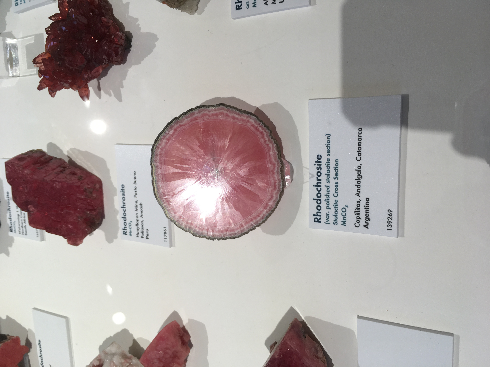

In a visit to the Harvard museum of natural history, I saw part of their large collection of minerals. One specimen in particular caught my eye: a slice from a rhodochrosite (MnCO3) stalactite. The sample had been polished and then very lightly etched on the polished face which revealed, in a raking light, the individual grains composing the polycrystalline stalactite slice. I though that this was a very interesting result and a very interesting example of crystallite growth.
Beign a carbndate minieral, I believe that similar etching effects could be achieved very reasonably by etching in a solution of carbonic acid. That's special (and also a little silly) because carbonated liquids like seltzer water should have reasonably large enough concentrations of weak acid to achieve thais sort of very slight etching and reveal the radial growth patterns of the crystallites in carbonate mineral stalactites.
